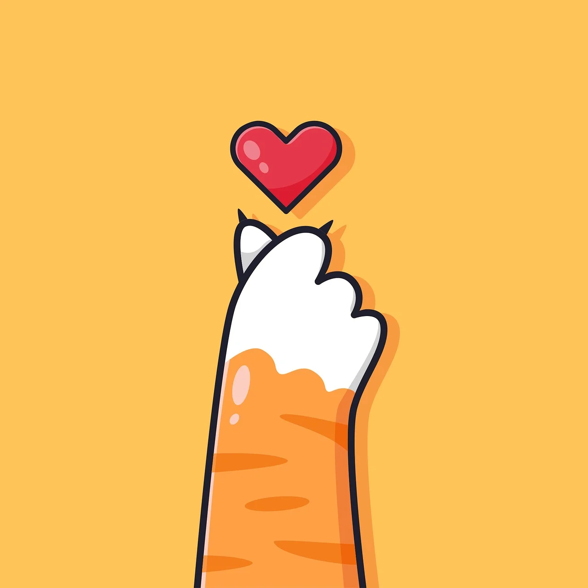

maaf kesan nya kaya web buat download lagu
love language ku share lagu soalnya hehe
maaf yaa, kepanjangan aku ngeluarin yang ada di dalem hati, maaf kalo gajelasss
aku hamzah firdaus ya kamu juga udah taukan
aku buat web ini cuman buat kamu
perempuan yang berhasil menyinari hari ku
dengan adanya kamu hidup ku lebih berwarna dan waktu ku pun terasa sangat cepat.
bukan nya baru kemarin aku manggil kamu "sayang, ayang, kwek, bub"
jujur aku masih sayang banget sama kamu
aku juga kaya nya obses deh sama kamu
padahal aku udah berusaha kurangin rasa suka ku ke kamu
tapi nyata nya gabisa, yang ada malah nambah kepikiran :)
aku kangen banget waktu kita jalan pulang bareng
trus kita ke ujanan bareng, kalo di inget tiap malem
rasanya lucu banget deh.
maaf ya aku selalu ngelakuin hal aneh sampe ngebuat hubungan kit jadi begini
ini gara gara rasa ku yang terlalu berlebih ke kamu
ku kira dengan tidak berkomunikasi dengan mu aku bakal bisa ngurangin rasa suka ku
ternyata masih sama rasanya kaya pas pertama kali aku ketemu sama kamu
aku gatau harus kaya gimana lagi biar aku bisa "normal"
aku gatau kenapa kalo kamu ngelakuin hal kaya misal punya temen cowo, atau up foto kamu sendiri
di platform yang kamu punya aku ngerasa ga suka hehe...
mungkin ini karena rasa suka yang berlebih
aku berusaha nahan pikiran aneh cuman kadang suka kemana mana mikirnya
aku juga gatau selalu mikirin hal kedepan nya bakal gimana
maaf ya mungkin karena trust issue pas kecil yang belum sembuh duh ngomong apa lagi aku ini.
oiya ngomong ngomong kalo nanti kamu udah "nemuin" pilihan hidup kamu dan memutuskan untuk menikah dengannya
jangan sungkan sungkan kabarin aku yaa hehe..
makasih udah ngasih kenangan terbaik buat hidup ku
akuu gabakalan pernah bisa ngelupain ini.
kalo hidup ibarat film part terbaik dalam hidup ku tentu kamu.
kangen pat pat miaw deh.
kamu tau ga si semenjak aku ga berkomunikasi sama kamu
aku tuh selalu nanya, kenapa aku ngelakuin ini?
aku sayang banget tw sama kamu
aku gatau harus gimana biar bener bener jadi normal.
mungkin aneh ya aku nyampein beginian pasti kamu mikirnya "apaan sih ni orang, aneh banget".
ntah kenapa aku kesepian banget rasa nya
padahal duluu juga akuu kesepian tapi kok beda rasanya yaa?
apa karena gadaa kamuu :(
aku sayang kamu may alafyu may, i miss youu.
i just want to be your favorit boy
ayangg:(
tapii gapapa kann kamu juga gak kesepian tohhh masi ada yang nemeninn eheee
aku sayang kamuu.
tapi bentar kayaknya masi ada yang mw aku ceritain
boleh kan...?
kalo mw lanjut baca klik yang bawah kalo engga gapapaa koooo
nomer ku masi yang dulu ko
makasi udah mw baca tombol home